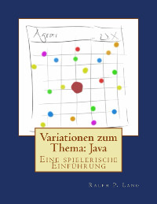

Variationen zum Thema:
Java
Eine spielerische Einführung
von Ralph P. Lano, 1. Auflage
Für wen
Für Sie, die lieben Leser. Wenn Sie bisher noch keine oder wenige Programmierkenntnisse haben, dann sind Sie hier richtig. Auch wenn Sie Bücher mit vielen Bildern mögen, sind Sie hier richtig. Allerdings lassen Sie sich nicht durch die Seitenanzahl täuschen: es kommt viel Arbeit auf Sie zu. Wenn das eher nix für Sie ist, dann sind Sie hier nicht richtig.
Von wem
Ich bin seit 2011 Professor für Internetprogrammierung und Multimediaapplikationen im Studiengang MediaEngineering an der Technischen Hochschule Nürnberg. Von 2003 bis 2010 war ich Professor für Softwaretechnik und multimediale Anwendungen an der Hochschule Hof, und von 2010 bis 2011 Professor für Media and Computing an der Hochschule für Technik und Wirtschaft Berlin. Ich promovierte 1996 an der University of Iowa zum Thema 'Quantum Gravity: Variations on a Theme'. Von 1996 bis 1997 war ich Postdoctoral Research Associate am Centre for Theoretical Studies des Indian Institute of Science. In der Zeit von 1997 bis 2003 war ich zunächst bei Pearson Education und später bei der Siemens AG in der Softwareentwicklung und dem Projektmanagement tätig.
Über was
Das wird jetzt ein bischen technisch, aber manche Leute wollen wissen worauf sie sich einlassen: Im ersten Kapitel unternehmen wir mit Karel die ersten Programmierschritte. Dabei lernen wir Methoden, Schleifen, Bedingungen und unsere ersten Software Engineering Prinzipien kennen. Vor allem das Top-Down Prinzip wird das erste Mal vorgestellt. Das zweite Kapitel führt in die Grafikprogrammierung ein, es werden die Klassen der ACM Bibliothek vorgestellt und wir lernen Objekte zu benutzen. Danach folgt eine Einführung in Konsolenprogramme. Dabei lernen wir Variablen und Operatoren kennen, Bedingungen und Schleifen werden vertieft, boolsche Variablen werden vorgestellt und der 'Loop and a Half' wird gezeigt. Im Kapitel Agrar wird das Top-Down Prinzip vertieft und Methoden werden auf ein neues Fundament gestellt. Auch wird gezeigt wie Animationen und MouseEvents funktionieren, und der RandomGenerator wird das erste Mal benutzt. Kapitel fünf beschäftigt sich mit Strings und dem StringTokenizer, und führt Klassen ein. Das Swing Kapitel führt in die Grundlagen für grafische Benutzeroberflächen ein und konkretisiert den Begriff der Instanzvariablen. Die Grundlagen der Objektorientierung, Vererbung und Komposition werden im folgenden Kapitel ausführlich besprochen und an zahlreichen Beispielen vertieft. Außerdem werden Arrays und einfache Bildverarbeitung eingeführt. Nebenbei werden auch KeyEvents angesprochen. Im letzten Kapitel folgen dann Dateien und Fehlerbehandlung, eine Einführung von ArrayList und HashMap, und wir schließen mit Interfaces und dem Begriff Polymorphismus ab.
Wie
lernt man Klavier spielen? Nicht durchs Zuschauen oder Zuhören. Genauso ist es mit dem Programmieren: man muß viel üben! Und je mehr man übt, desto besser wird das mit dem Programmieren. Wobei wir hier nicht nur Programmieren lernen, sondern eigentlich auch erste Schritte im Software Engineering unternehmen.
Die Veranstaltung so wie ich sie unterrichte besteht aus drei Komponenten: der Vorlesung, der Übung und Hausaufgaben. Die Vorlesung ist vier Stunden pro Woche und entspricht jeweils dem ersten Teil eines Kapitels im Buch. Ein Kapitel schaffen wir in ca ein bis zwei Wochen. In den Übungen, die auch vier Stunden pro Woche dauern, widmen wir uns dann den Projekten. Dabei schaffen wir zwischen vier und sechs der Projekte pro Übung. In der Übung arbeiten die Studierenden in Teams, meist zu zweit, um sich gegenseitig zu helfen. Die Hausaufgaben werden im wöchentlichen Rhythmus bearbeitet und benötigen ca 8 bis 10 Stunden pro Woche. Es ist wichtig, dass die Studierenden alleine an der Hausaufgabe arbeiten. Dabei lege ich ganz großen Wert darauf, dass die Studierenden sich am Anfang der Veranstaltung schriftlich dazu verpflichten den Ehrenkodex der Stanford University einzuhalten. Die Hausaufgabe muss auch nicht vollständig bearbeitet sein, oder perfekt funktionieren. Die Hausaufgaben werden individuell in den Übungen besprochen, und fast alle Probleme lassen sich innerhalb von fünf bis zehn Minuten lösen.
Wo
finde ich die Beispiele und den Quellcode? Auf der Webseite zum Buch: "www.VariationenZumThema.de". Auch Updates, Links zur Entwicklungsumgebung, das Buch in elektronischer Version gibt's dort. Das Buch selbst gibt's bei Amazon, in Schwarz-Weiß (billig) und in Farbe (teuer).
Darf ich
die Beispiele verwenden, oder das Buch kopieren? Dieses Material steht unter der Creative-Commons-Lizenz Namensnennung - Nicht-kommerziell - Weitergabe unter gleichen Bedingungen 4.0 International (CC-BY-NC-SA 4.0) D.h. Sie dürfen das Material in jedwedem Format oder Medium vervielfältigen und weiterverbreiten, das Material remixen, verändern und darauf aufbauen. Aber Sie müssen angemessene Urheber- und Rechteangaben machen, einen Link zur Lizenz beifügen und angeben, ob Änderungen vorgenommen wurden. Diese Angaben dürfen in jeder angemessenen Art und Weise gemacht werden, allerdings nicht so, dass der Eindruck entsteht, der Lizenzgeber unterstütze gerade Sie oder Ihre Nutzung besonders. Sie dürfen das Material nicht für kommerzielle Zwecke nutzen. Und wenn Sie das Material remixen, verändern oder anderweitig direkt darauf aufbauen, dürfen Sie Ihre Beiträge nur unter derselben Lizenz wie das Original verbreiten und Sie dürfen keine zusätzlichen Klauseln oder technische Verfahren einsetzen, die anderen rechtlich irgendetwas untersagen, was die Lizenz erlaubt. Um eine Kopie dieser Lizenz zu sehen, besuchen Sie http://creativecommons.org/licenses/by-nc-sa/4.0/.
Der Quellcode ist unter der MIT License (http://choosealicense.com/licenses/mit/).
Warum
dieses Buch? Ich halte die Vorlesung "Programmieren 1" seit ca 2004 in verschiedenen Formen, Studiengängen und Hochschulen. Dabei war ich jahrelang sehr unglücklich mit der Art und Weise wie Programmieren allgemein unterrichtet wird. Bis ich 2010 auf die Vorlesung "Programming Methodology" der Stanford University gestoßen bin. Hier haben sich ein paar sehr schlaue Köpfe zusammengetan und über 10 Jahre ein didaktisch fein abgestimmtes Konzept entwickelt, wie man Programmierung in einer lustigen, motivierenden aber auch herausfordernden Art und Weise beibringen kann. Meine Studierenden haben immer wieder genörgelt, ob es nicht ein Buch dazu auf Deutsch gibt. Jetzt gibt's eins.
Woher
kommen die Ideen? Ohne Zweifel ist der Stil, der pädagogische Aufbau und viele der Beispiele inspiriert von Mehran Sahami's Vorlesung [1], die ja wiederum auf dem Buch von Eric Roberts [2] basiert. Ohne diese beiden, würde dieses Buch ganz anders aussehen. Auch Robert Sedgewick und Kevin Wayne's Buch [3] hat mich sehr beeinflusst, sowie das Buch von Ägidius Plüss [4]. Ich kann all diese Bücher nur wärmstens empfehlen, alle drei sind diesem hier weit überlegen. Trotzdem bilde ich mir ein, mit diesen Zeilen auch etwas Neues, hoffentlich Nützliches, geschaffen zu haben.
.
Referenzen
[1] Programming Methodology, CS106A, von Mehran Sahami, https://see.stanford.edu/Course/CS106A
[2] The Art and Science of Java, von Eric Roberts, Addison-Wesley, 2008
[3] Introduction to Programming in Java, von Robert Sedgewick und Kevin Wayne
[4] Ägidius Plüss, Java exemplarisch, http://www.aplu.ch/home/apluhomex.jsp?site=0
.